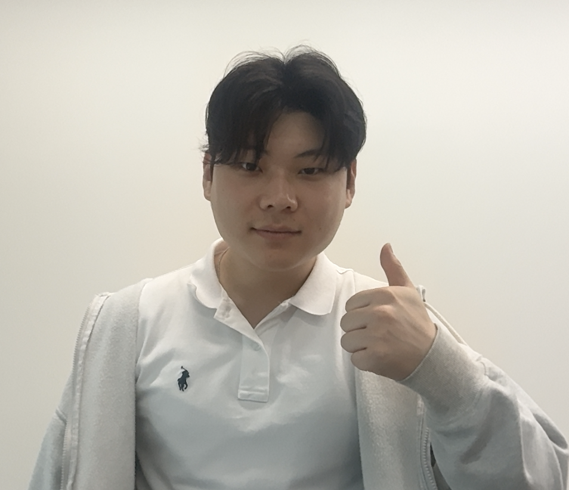
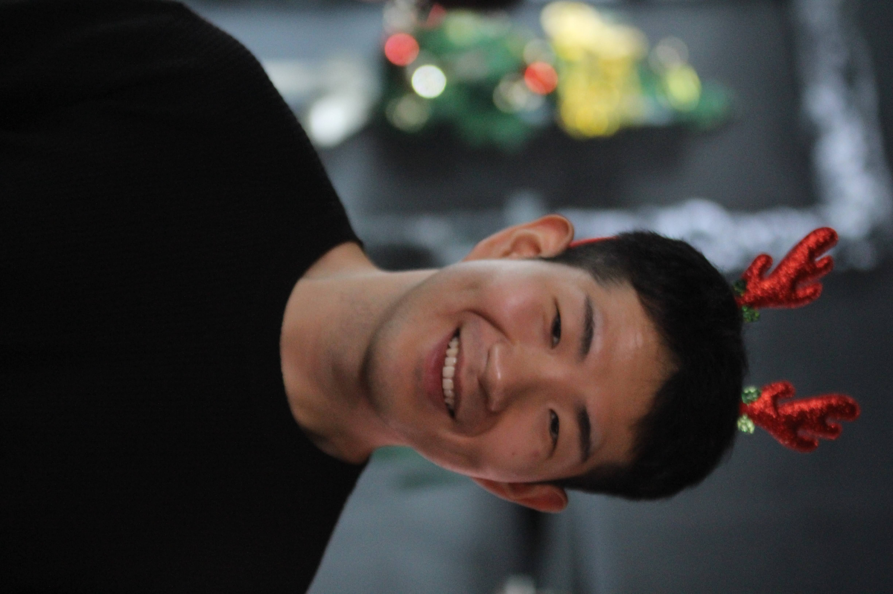
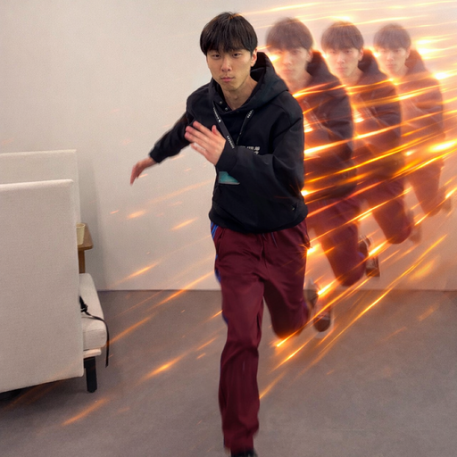

예술in ARCADE 최종 오디션
이 크루들,
피노“빨뚜 통째로, 받아!”
이프“거기, 자리해야지~”
무빙“이 무빙, 따라와 봐.”
이 크루들,
다 잡을 수 있어?
서류 심사부터 최종 오디션까지.다섯 심사관을 넘어,
당신의 무대를 완성하세요.

서류 심사1차
대길“잡힐 때까지 추노!”
2차3차
맥스“추억으로 남겨줄게~”
최종 · 극악참가 신청 01 / 02
닉네임을 입력하세요
새 기록부터 전체 순위에 반영돼요.
02 / 02 · 역할 선택
도전자 님, 준비됐나요?
역할을 고르면 한 판 동안 유지돼요.
역할 선택
감독의 네 가지 스킬이동은 방향키 · 회피는 Space
조작법
↑ ↓ ← →이동
Space회피방향키와 함께 누르기
Q / W공격Q는 길게 눌러 연속 공격
E강화
R궁극기100% 충전 + 쿨타임 종료
캐스팅 완료. 감독님의 액션을 기다리는 중.
↑↓←→이동
Q연속 공격
W공격 스킬
E강화 버프
R궁극기
SPACE회피